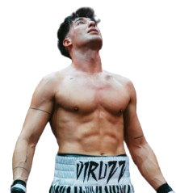

LA BESTIA DEL RING. CONSTANCIA Y AGRESIVIDAD INDOMABLE.
Víctor Pérez, mundialmente conocido en la escena digital como ByViruzz, ha trascendido la pantalla para convertirse en un verdadero atleta de contacto. Su evolución en La Velada del Año es puro espectáculo.
Caracterizado por un estilo de boxeo agresivo, de presión constante y una guardia férrea, Viruzz no solo destaca por su técnica, sino por un acondicionamiento físico de élite que le permite mantener un ritmo asfixiante durante todos los asaltos.
"En el ring no hay suscriptores. Ahí arriba solo somos dos personas y el que más ha entrenado es el que sale con el brazo en alto."
Victoria (TKO)
La Velada del Año II - Pabellón Olímpico de Badalona.
Combate Internacional
Misfits Boxing 007 - Wembley Arena, Londres.